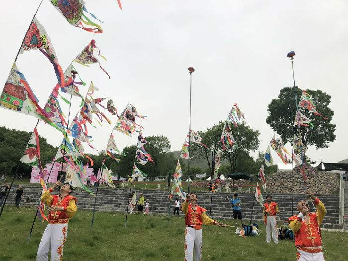
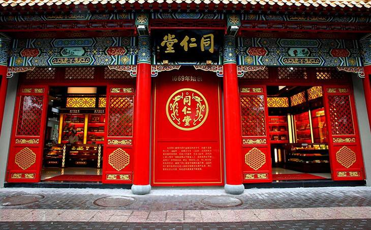

北京部分非物质文化遗产
-

抖空竹
北京抖空竹是中国传统文化苑中一株灿烂的花朵。空竹古称“胡敲”，也叫“地铃’、“空钟”、“风葫芦”、“抖嗡”、“抖地铃”、“扯铃”等。 -
厂甸
厂甸庙会是北京市的传统民俗及民间宗教信仰活动。在旧京城的众多庙会中，惟有厂甸的庙会，不以庙为名，每年正月初一至初五这个时间段举行，规模最大、京味最浓、最闻名遐迩和脍炙人口的。 -
北京雕漆
北京雕漆造型古朴庄重，纹饰精美考究，色泽光润，形态典雅，并有防潮、抗热、耐酸碱、不变形、不变质的特点。雕漆工艺是中国漆工艺的一个重要门类，也是北京传统工艺美术的精华之一。 -
京剧
京剧，曾称平剧，亦称乱弹、国剧。我国知名戏曲剧种，中国五大戏曲剧种之一，场景布置注重写意，腔调以西皮、二黄为主，用胡琴和锣鼓等伴奏，被视为中国国粹，中国戏曲三鼎甲“榜首”。京剧艺术博大精深，文戏武戏各美其美。京剧走遍世界各地，分布地以北京为中心，遍及中国，成为介绍、传播中国传统艺术文化的重要媒介。在2010年11月16日，京剧被列入“世界非物质文化遗产代表作名录”。 -
京西太平鼓
平鼓是一种老百姓自娱自乐、集体传承、集体发展的传统舞蹈，具有广泛的群众基础和深厚的历史渊源，在当地的民俗活动中发挥着重要的作用。太平鼓自明代起在北京流传，清初，京城内外太平鼓极为盛行 -
景泰蓝工艺
景泰蓝（Cloisonne），中国的著名特种金属工艺品类之一，到明代景泰年间这种工艺技术制作达到了最巅峰，制作出的工艺品最为精美而著名，故后人称这种金属器为“景泰蓝”。景泰蓝正名“铜胎掐丝珐琅”，俗名“珐蓝”，又称“嵌珐琅”，是一种在铜质的胎型上，用柔软的扁铜丝，掐成各种花纹焊上，然后把珐琅质的色釉填充在花纹内烧制而成的器物 。因其在明朝景泰年间盛行，制作技艺比较成熟，使用的珐琅釉多以蓝色为主，故而得名“景泰蓝”。 -
聚元号
聚元号弓箭制作技艺，北京市朝阳区传统手工技艺，国家级非物质文化遗产之一。 聚元号弓箭制作技艺承袭了中国双曲反弯复合弓的优良传统，弓的主体内胎为竹，外贴牛角，内贴牛筋，两端安装木质弓肖。弓的制作分成弓的“白活”和装饰的“画活”两个环节。 -
昆曲
昆曲（Kun Opera），原名“昆山腔”或简称“昆腔”，是中国古老的戏曲声腔、剧种，现又被称为“昆剧”。昆曲是汉族传统戏曲中最古老的剧种之一，也是中国汉族传统文化艺术，特别是戏曲艺术中的珍品，被称为百花园中的一朵“兰花”。昆曲发源于14世纪中国的苏州昆山，后经魏良辅等人的改良而走向全国，自明代中叶以来独领中国剧坛近300年。 -
荣宝斋
荣宝斋木版水印源于中国古代雕版印刷的"版"套印，所谓"版"套印，是根据画稿笔迹的粗细长短、曲直方圆、刚柔枯润，设色的深浅、浓淡、冷暖及色相的向背阴阳分版勾摹，刻成若干板块，然后对照原作，由深至浅，逐笔依次叠印，力求逼肖原作，精确无误，达到乱真的程度。 -
天桥
天桥中幡是北京市的地方传统民俗杂技。北京的天桥是一个历史悠久、驰名中外、繁华热闹的平民市场。清康熙年间，天桥出现了市场的雏形，清末民国初年天桥市场发展很快，各种曲艺杂耍遍布其中。 -

同仁堂
同仁堂中医药文化体现在“同修仁德，济世养生”的价值观，“炮炙虽繁必不敢省人工，品味虽贵必不敢减物力”的质量观和“讲信义，重人和”的经营理念，“童叟无欺，一视同仁”的职业道德，以及同仁堂的品牌和特有标记。